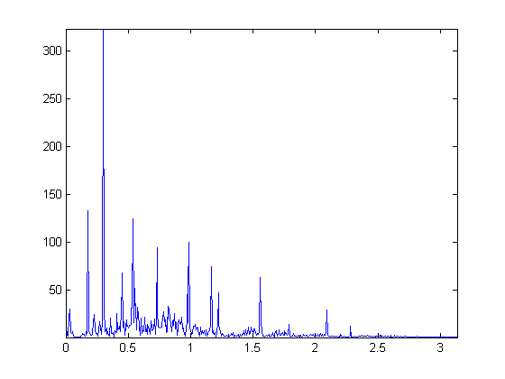
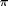
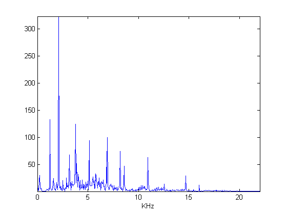
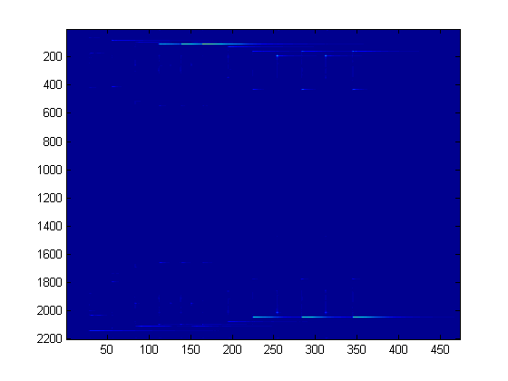
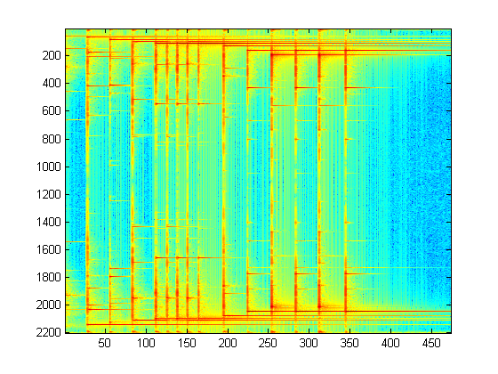
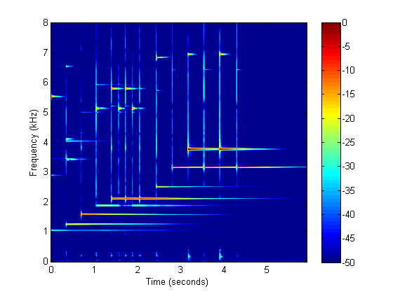
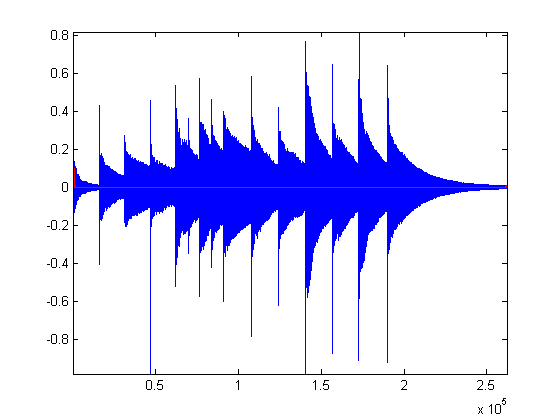
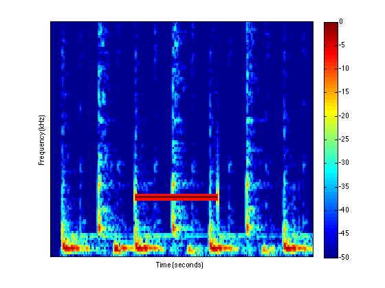

EHB 372E Week-6 : The Short-Time Fourier Transform
For analyzing audio signals, the time domain and the frequency domain representations may be used for different tasks but for some applications we need a representation that jointly represents the time-frequency information. The short-time Fourier transform can be used for this purpose. The STFT consists of the DFTs of portions of the time-domain signal. We will be interested in the STFT of audio signals, so let us first see how to read an audio signal. We will work with .wav files.
Contents
Audio Input
For reading in audio, we use the function 'wavread'. Let us read the file 'Glock.wav'. This is a short melody played by a glockenspiel.
[x,fs] = wavread('Glock.wav');
Here 'x' contains the samples of the audio signal and fs is the sampling frequency. Note that we need to know 'fs' to properly play the audio. To hear what 'x' sounds like, use the function 'soundsc'. Do not forget to provide 'fs'.
soundsc(x,fs);
To understand why 'fs' is important, try the following.
soundsc(x,fs/2);
Now try doubling 'fs'.
soundsc(x,2*fs);
What would happen if you played speech with a wrong 'fs'? (you can try it on 'matematik.wav')
Viewing Audio
Now that we know how to read in audio to Matlab, let us discuss how to visualize audio. Let us plot the function in the time domain
figure; plot(x); axis tight; % this discards the unnecessary white space

Notice that the unit of the x-axis is 'samples'. But these samples are related to time. It might be preferable to use 'seconds' as the time unit. To convert, we need to use the sampling frequency 'fs'. Note that there are 'fs' samples in a second. So, if the length of the signal is N samples, the total duration of the signal should be N/fs seconds.
t = (0:length(x)-1)/fs; plot(t,x); axis tight; xlabel('seconds');
We now see that the signal duration is about 6 seconds. Notice that from the time domain representation, we can see where the notes start and end. But it is not easy to see which particular notes are being played. That is, the contents of the notes are not visible when we view the time-domain signal. For that, we need a frequency domain image. We can obtain a frequency domain image with FFT or freqz.
[H,W] = freqz(x); % try 'help freqz' to see what H and W is plot(W,abs(H)); axis tight;
Here, the frequency unit is 'radians/sample'. But we would like to see 'Hertz'. To convert 'rad/sample' to 'Hz', remember that the highest frequency for a discrete time signal is  rad/sample and it corresponds to 'fs/2' Hz.
f = (fs/2)*W/pi; plot(f/1000,abs(H)); axis tight; xlabel('KHz');
The frequency unit is now Hz. We can see some peaks, which actually correspond to notes, but it's not easy to say which of these occur when. STFT comes into play at this point. Here's what we would like to do this week.
win = hamming(50*fs/1000); % analysis window of length 50 msec. hop = round(length(win)/4); % the hop-size win = NormalizeW(win,hop); % this step you will skip X = STFT(x,win,hop); % this is my STFT function, you'll write your own
X contains the STFT coefficients. It is a time-frequency representation and may be regarded as an image. We can display its magnitude using 'imagesc' (we will display its magnitude only, the phase is important too but the magnitude usually provides enough visual information to understand the signal content).
imagesc( abs( X ) );
We don't see much in this image, but the information is actually there. With audio, the logarithm of the magnitude is visually more revealing.
imagesc( log( abs( X ) ) );
This is much better but it is still not easy to interpret because the axes are not properly labeled and negative and positive frequencies are present in the same image. Below is what you get when you properly zoom in and label.
%some preparation for displaying the STFT coefficients Fr = [0 8000]; % the frequency range to view clim = [-50 0]; % the amplitude range to view (in decibels) DispSTFT(X/max(abs(X(:))), fs, length(win), hop, Fr, clim); % this is my display function, you'll write your own
We can now see which note occurs when. This week, you will implement an STFT function, a display function, and the inverse STFT function.
The STFT : How to implement
The idea in STFT is to take a small chunk using a window, compute its DFT and place it as the column of a matrix. Then, you move the window a little and compute the DFT again. We will collect the STFT coefficients into the matrix Z. Here is the first step.
N = 40*fs/1000;
win = hamming(N);
F = fft( x(1:N) .* win );
Z = F; %F is the first column of Z
The next column is obtained by sliding the window by 'hop' samples. This is also referred to as the 'hop-size'.
F = fft( x( hop + (1:N) ) .* win ); % this is equivalent to sliding the window
Z(:,2) = F;
You see the pattern ...
F = fft( x( 2*hop + (1:N) ) .* win ); % this is equivalent to sliding the window
Z(:,3) = F;
This is continued until you reach the end of 'x'. Write a function called STFT which can be called as above.
Inverting the STFT
The STFT representation is useful because it allows us to obtain interesting effects via simple operations on the STFT coefficients. So, when processing a signal with the STFT, the idea is to compute the STFT coefficients, modify the coefficients and then invert the STFT to obtain the modified signal in the time domain. We now discuss how to invert the STFT.
Recall that the columns of Z hold the DFTs of the segments of x, modified by a window. For instance, we can obtain samples of x multipllied by a sliding window as follows.
y1 = ifft( Z(:,1) ); % the first N samples multiplied by the window y2 = ifft( Z(:,2) ); % the samples in between ( hop + (1:N) ) multiplied by the window. y3 = ifft( Z(:,3) ); % the samples in between ( 2*hop + (1:N) ) multiplied by the window.
In an attempt to reconstruct x, we combine these pieces as follows.
y = zeros(N + 2*hop,1); y(1:N) = y1; y( hop + (1:N) ) = y( hop + (1:N) ) + y2; y( 2*hop + (1:N) ) = y( 2*hop + (1:N) ) + y3;
We would like y to be equal to the first samples of x but this is not the case. We need to take into account the windowing. In fact y can be seen to be equal to a masked version of x. The mask can be constructed similar to y.
mask = zeros(N + 2*hop,1); mask(1:N) = win; mask( hop + (1:N) ) = mask( hop + (1:N) ) + win; mask( 2*hop + (1:N) ) = mask( 2*hop + (1:N) ) + win; z = x( 1:(N+2*hop) ) .* mask; % we claim that z is equal to y max( abs (y - z) ) % check the claim -- the result should be numerically zero...
ans = 1.1102e-16
Write a function called ISTFT that takes as input the STFT coefficients, the window used for the STFT and the hop size. Check that your function correctly recovers the original signal when the STFT coefficients are not modified.
win = hamming(50*fs/1000); hop = round(length(win)/4); win = NormalizeW(win,hop); X = STFT(x,win,hop); z = ISTFT(X,win,hop); plot(x); hold on; plot( abs( x-z(1:length(x)) ),'r'); axis tight;
In-Class Exercises
- Write your own STFT function. Your function should take as input the audio signal, the window and the hop-size. The output should be the STFT coefficients. See the section "The STFT : How to implement" in this document.
- Write your own ISTFT function (the inverse STFT). Your function should take as input the STFT coefficients, the window and the hop-size. The output should be a time-domain signal. Implement your function as described in the section "Inverting the STFT".
- Write a display function. Your function should take as input the STFT coefficients, the window length, the hop size, a frequency range to view and an amplitude range to view. Place the time and frequency labels so that you can tell when and at which frequency some component occurs. See the section "Viewing Audio".
- Read in 'matematik.wav';
- Plot the function in the time domain and in the frequency domain.
- Compute the STFT coefficients of the file and display them using your function.
- Compute the ISTFT and compare with the original signal.
Homework
In the file 'Restore.wav', there is an unwanted sinusoidal. Below is the spectrogram of the signal. Notice the red line segment in the middle. That represents the unwanted signal. You need to remove that.

Remove the unwanted signal by applying a mask to the STFT coefficients of the signal. Do not apply a filter! You need to
- Obtain the STFT coefficients, and display it.
- Construct a mask and multiply the STFT coefficients with the mask you constructed. Then display the resulting coefficients.
- Compute the inverse STFT of the modified coefficients to obtain the signal free of the sinusoid.
- Compute the STFT coefficients of the restored signal again and display them.
Ilker Bayram, Istanbul Teknik Universitesi, 2015